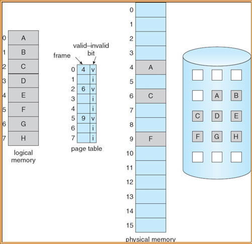
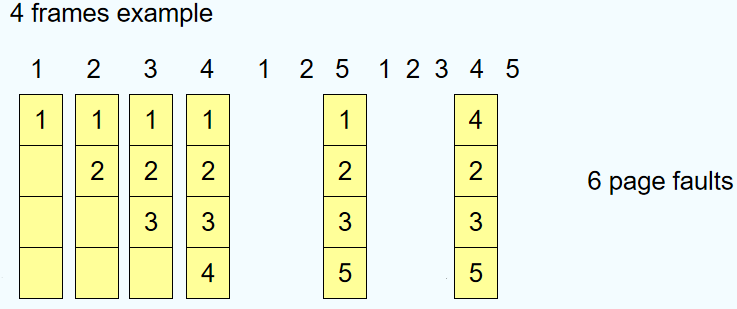

Virtual Memory
约 4588 个字 11 张图片 预计阅读时间 31 分钟
背景
什么是虚拟内存
虚拟内存 - 用户逻辑内存与物理内存的分离
- 只有部分程序需要在内存中执行
- 逻辑地址空间可能比物理地址空间大得多
- 允许多个进程共享地址空间
- 允许更有效的进程创建
x6 book：虚拟内存不是一个物理对象，而是内核提供的用于管理物理内存和虚拟地址的抽象和机制的集合。
虚拟内存的实现方式
- 请求分页(paging)
- 请求分段(segmentation)
分页和分段的区别：分页多了请求置换的操作
局部性原理
- 局部性原理(principle of locality): 指程序在执行过程中的一个较短时期所执行的指令地址和指令的操作数地址，分别局限于一定区域。表现为:
- 时间局部性: 一条指令的一次执行和下次执行，一个数据的一次访问和下次访问都集中在一个较短时期内;
- 空间局部性: 当前指令和邻近的几条指令，当前访问的数据和邻近的数据都集中在一个较小区域内。
虚拟存储器是具有请求调入功能和置换功能，仅把进程的一部分装入内存便可运行进程的存储管理系统，它能从逻辑上对内存容量进行扩充的一种虚拟的存储管理系统。
虚拟内存的优势
- 通过将共享对象映射到虚拟地址空间，多个进程可以共享系统库
- 可以实现内存共享
- 可以在流程创建期间共享页面(加快创建速度)
- (Memory-Mapped Files)虚拟内存将文件内容映射到进程的地址空间的技术。通过内存映射文件，可以像访问内存一样访问文件内容，而无需显式地进行读写操作。这种技术在处理大文件、提高文件访问性能以及实现进程间通信等方面非常有用。
写时复制(COW)
CoW 的主要目的是减少内存使用和提高性能，通过延迟实际的内存复制，直到某个进程尝试修改内存内容时才进行复制
- fork
- 子进程修改内容前
- 当父进程调用 fork() 创建子进程时，操作系统并不会立即复制父进程的内存地址空间。
- 相反，子进程会共享父进程的内存页面，并标记这些页面为只读。
- 当父进程或子进程仅读取共享页面时，操作系统不会触发缺页中断，读操作可以直接访问共享页面的内容。
- 子进程修改内容后
- 当父进程或子进程尝试写入某个共享页面时，操作系统会检测到写操作并触发一个缺页中断。
- 操作系统会处理这个缺页中断，为写入的进程分配一个新的物理页面，并将原始页面的内容复制到新的页面中。
- 新的页面会被标记为可写，而原始页面仍然保持只读状态，继续被其他进程共享。
- 子进程修改内容前
写时复制的优势：加快创建进程的速度，同时节约内存空间
请求分页
优势
- 更少的I/O操作
- 更少的内存使用
- 更快的响应速度
- 支持更多用户
当请求分页的时候，进行页面检查，如果是无效页就终止请求，如果不在内存中就从磁盘拷贝到内存中
Lazy swapper - 只有当页面被用到的时候才调入内存
内存中数据一般是离散分配的，但是外存中的数据是连续分配的
页面的有效位
v表示页存在内存中，i表示页不存在内存中(初始化的时候全部都为i)，如果访问页面的有效位为i，就会产生缺页中断
结构
- 状态位P(存在位): 用于指示该页是否已调入内存，供程序访问时参考。
- 访问字段A: 用于记录本页在一段时间内被访问的次数，或最近已有多长时叠加间未被访问，提供给置换算法选择换出页时考。
- 标记修改位R/W: 表示该页在调入内存后是否被修改过。
- 外存地址: 用于指出该页在外存上的地址，供调入该页时使用。

缺页中断
需要判断页面是否合法，如果页面合法并且确实不存在内存中，需要将页面从外存调入到内存中，然后设置有效位并且刷新页表，然后重新执行导致缺页中断的这条指令
发生缺页中断的时候，进程处于什么状态？
wait状态
缺页异常结束之后进程变成ready状态
如果在块移动操作时发生缺页异常，可能会导致数据不一致性问题
采用预处理操作(提前取出可能需要用到的页)
流程
存在缺页异常的表现情况(有效访问时间)
这里在Pfault结束后，将会重启memory access指令，故下一次重启的访存就不算在本次的EAT里面了。
如果发生缺页中断的时候没有空闲的页会怎么办？
进行页面替换，找到一些满足某些特定条件的页面换出，然后换入需要的页。
页面替换需要找到一种合适的算法来实现发生缺页异常的次数尽可能的小。
页的分配
页面替换的基本流程
- 在二级存储中查找所需页面的位置。
- 找一个空闲的页：
- 如果有空闲的页，就直接使用。
- 如果没有空闲帧，则使用页面替换算法来选择替换出去的帧。
- 将换出帧写入二级存储器(dirty bit)；相应地更改页表和框架表。
- 将所需的页面读入新释放的帧；更改页表和页表。
- 从发生页面错误的地方继续该流程。
虽然理论上说的是当没有空闲页的时候进行替换，但是在实际应用中并不会等到完全用完，而是使用率达到一定程度会就会开始替换
页面替换算法
- 只关注页号，不关注具体的页内偏移
- 大致上，物理页面大小越大，发生缺页异常的概率越小，但是当物理页面的大小达到一定程度之后，页面继续增大对缺页异常的发生频率的影响就几乎不变
先进先出算法
FIFO 算法：替换最早进入的页面
示例
Belady异常：增大物理帧的存储空间并不能保证降低缺页异常的发生频率，这与页面访问的顺序有关
最佳置换算法
Optimal Algorithm：发生缺页次数最小的算法，替换未来最长时间不会使用的页，如果找不到满足条件的页，就是用先进先出算法
示例

这个算法需要知道后续页面的调用情况，但是在实际情况中我们是不知道的。所以在实际生活中不能使用，一般用来与其他算法进行比较来衡量其他算法的表现情况
LRU算法
最近最久未使用置换算法：选择内存中最久没有引用的页面被置换。这是局部性原理的合理近似，性能接近最佳算法。但由于需要记录页面使用时间，硬件开销太大。
示例
使用计数实现
- 每个页表都有一个计数器；每次通过页表引用页面时，将时钟复制到计数器中
- 当需要替换页面时，查看计数器来确定要替换哪些页面
使用栈实现
设置一个特殊的栈，把被访问的页面移到栈顶，于是栈底的是最久未使用页面。
使用移位寄存器实现
移位寄存器: 被访问时左边最高位置1，定期右移并且最高位补0，于是寄存器数值最小的是最久未使用页面。(Additional-Reference-Bits Algorithm 附加引用位算法)
LRU近似算法(Clock)
也称为Second chance algorithm, clock algorithm
添加一个标记位，每一页都初始化为0，如果访问过了就置为1。在需要页面替换的时候进行循环，如果标记位为1，就更改为0，如果标记位为0，就替换出去。
示例
改进的Clock算法
Enhanced clock algorithm：使用引用位和修改位:引用过或修改过置成1
不同的组合情况(访问位，修改位)
- (0,0): best page to replace
- (0,1): not quite good for replacement
- (1,0): will be used soon
- (1,1): worst page to replace.
- 淘汰次序:(0,0) > (0,1) > (1,0) > (1,1)
基本思想
- 第1轮扫描: 查找(0, 0)，不做修改
- 第2轮扫描: 查找(0, 1)，并且修改访问过的所有页面的访问位为0
- 第3轮扫描: 查找(0, 0)，不做修改
- 第4轮扫描: 查找(0, 1)
- 在这几轮扫描中，如果找到了满足条件的页，就进行替换
可以认为是查找顺序为(0, 0), (0 ,1), (1, 0), (1, 1)
基于计数算法
每一个页面都有一个访问此时的指向，每次被引用此时就加一
- LFU Algorithm(Least Frequently Used)：换出使用次数最小的页面
- MFU Algorithm(Most Frequently Used)：换出使用次数最多的页面(基于防止页面刚刚换进来就又要被替换出去的思想)
页面缓冲算法
- 通过被置换页面的缓冲，有机会找回刚被置换的页面
- 被置换页面的选择和处理
- 用FIFO算法选择被置换页，把被置换的页面放入两个链表之一: 如果页面未被修改，就将其归入到空闲页面链表的末尾，否则将其归入到已修改页面链表。
- 需要调入新的页面时：将新页面内容读入到空闲页面链表的第一项所指的页面，然后将第一项删除。
- 空闲页面和已修改页面，仍停留在内存中一段时间，如果这些页面被再次访问，这些页面还在内存中。
- 当已修改页面达到一定数目后，再将它们一起调出到外存，然后将它们归入空闲页面链表。
优点：添加了一定的缓冲功能，防止页面刚刚被调入就又要被调出的情况，并且实现的硬件开销较小
Windows、Linux页面置换算法是基于页面缓冲算法
页面分配
每一个进程都会有一个最少需要的页的数量(一般与操作系统的架构有关)
两个主要的分配方法
- 固定分配
- 基于优先级的分配
固定分配
- 每一个进程分配的页面数量相同
- 按比例分配(根据进程的大小分配 - 使用的物理页面的数量)
优先级分配
当发生缺页异常的情况时有两种替换方式
- Local replacement - 从自己分配到的页面空间中进行替换
- Global replacement - 从优先级低的进程的页面空间中进行替换
- 全局替换的问题：不可预测的页面错误率。无法控制自己的页面错误率更
- 本地替换的问题：空闲页面无法分配给需要的进程 -低吞吐量
实际操作系统中一般使用可变分配全局置换策略
抖动(Thrashing)
高频率的缺页异常会导致的问题：
- 较低的CPU使用率
- 都在等待 I/O 操作
- 操作系统会认为是因为太少的进程才导致的CPU利用率低，会添加更多的进程
- 循环陷入更坏的情况
抖动问题的解决方式：
- 增加物理内存
- 优化页面置换算法
- 在cpu调度中引入工作集算法
- 动态调整进程的内存分配
- 限制并发进程数
- 内存压缩
工作集算法
基于局部性原理(时间局部性和空间局部性)，统计局部性使用的空间大小，如果统计出来的大小大于内存的大小，那么就容易发生抖动的情况。使用局部替换的方式来进行页面替换(不会使用别的进程正在使用的页面)
工作集模型
- 工作集窗口：连续访问页面的固定大小的窗口
- 工作集大小：工作集窗口中访问的不同页面
- D：操作系统中所有进程的工作集大小的和
- d：可用的物理帧的大小
- 如果 D > d，那么就容易导致抖动现象的发生，此时可以通过挂起某些进程来避免问题的发生
工作集窗口太小就不能很好的包含局部性，而工作集太大会包含多个局部性
跟踪工作集大小
使用间隔定时器来计算，在每个时间区间的开头将所有页的指向位设置为0，然后在这个时间区间内如果页面被访问了，那么就将这个指向位设置为1。
使用两个bit的情况，在一个时间段的一开始，会将目前的情况右移一位，高位用0补全，并且如果两个bit中有一位是1，就认为使用了访问了这个页面。
这是一个大致估计的方式，因为使用的间隔是时间，而不是连续的一段页面访问情况，并且间隔定时器的中断频率和工作集的实际变化之间存在时间差
通过增加统计时使用的bit的位数以及降低中断发生的时间可以提高精度。
比如说使用2bit，中断时间为5000个时钟周期和使用10bit，中断时间为1000个时钟周期，这两种方式统计出来的工作集大小是一样的，但是第二种方式的时间延迟会小很多，所以第二种方式的效果更好一点，只是需要更多的空间来存储页面的访问情况。
可以针对用户设置的缺页率临界值调节分配给单个进程的页面数量，大于上界就分配更多的页给进程，小于下界可以取出一部分页给别的进程
内存映射文件
Memory-Mapped Files 是操作系统提供的一个系统调用(mmap)，是在磁盘文件和虚拟地址空间之间建立映射关系(将内存中的块映射为内存中的页)，从而可以做到以访问内存的方式来实现对文件内容的修改。允许多个进程共享映射到内存中的同一个页面
内核内存分配
内核内存的分配一般是从一个空闲内存池中分配的。
具体分配方式
Buddy System(伙伴系统)
内存的分配是以2的次方为大小进行分配的。当需要分配的内存大小小于目前有的页面的大小的时候，会对页面进行切割。
Slab Allocator
- Slab - 是一个预分配的内存池，包含多个相同大小的对象(是一块连续的区域，由多个页组成)
- Cache 是 Slab 的集合(每一个内核的数据结构都有单独的cache)
- cache 创建的时候，此时内部的所有对象都标记为空闲(free)
- 当有数据结构被存储时，对象就会被标记成已经使用(used)
- 如果一个 salb 中的对象都已经被使用时，就会从新的空的 slab 中分配对象，如果没有空闲的 slab，就会创建新的 slab
- 这样分配可以保证没有碎片(fragmentation)，并且分配满足要求的内存速度较快
这种分配方式更适用于数据结构较小的情况
其他的考虑
预调页
在一个进程实际请求页访问之前为这个进程预先分配所有页(或者部分页)，但是此时如果预分配的页没有使用，那么就会造成 I/O 操作以及内存的浪费。
一种类似的方式
每次替换页面的时候替换多个页面，除了页面本身之外，对相邻的页面也进行替换。
页面大小
- 如果出现的碎片太多，那么就采用更小的页
- 如果想要减小页表的大小，那么就采用更大的页
- 如果想要减小 I/O 的次数，那么就使用更大的页
- 如果想要获得更好的局部性，那么就使用更小的页(更小的页可以避免更多的无效内容进入内存)
TLB范围
\(TLB~Reach=(TLB~Size)\times(Page~Size)\)
最佳情况是每一个进程的工作集都存储在TLB中，否则就会导致较高的缺页率
解决方式
- 增大页面大小，但是可能会导致更多的内存碎片
- 使用不同大小的页，这种可以实现不同进程根据自己实际需要的大小来获取内存而不会导致内存碎片的增加
程序结构
对于一个遍历二维数组的操作，外层遍历为行和外层遍历为列的缺页异常情况差异是比较大的。
I/O 锁定
I/O interlock：如果正在进行将文件中的内容读取到内存中的操作，那么此时不应该进行页面替换操作(因为此时的 buffer 被占用了)